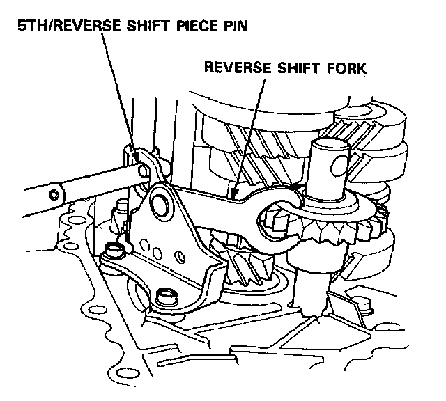
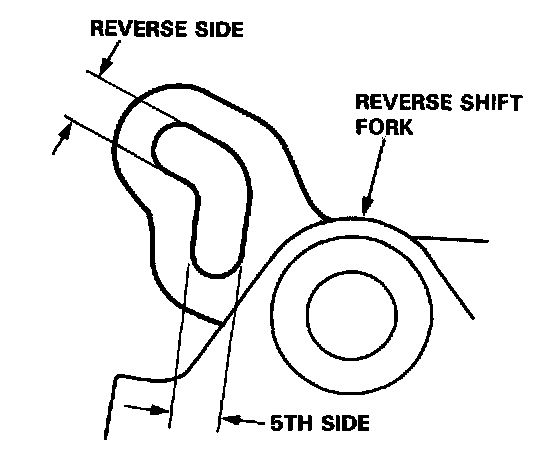
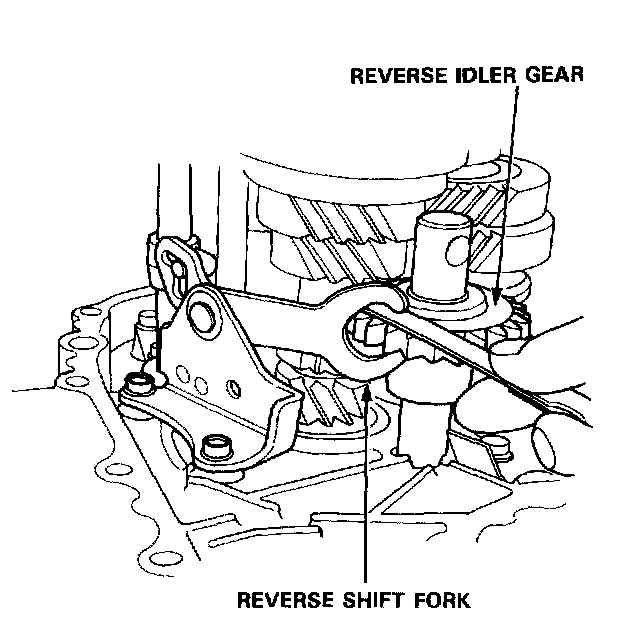
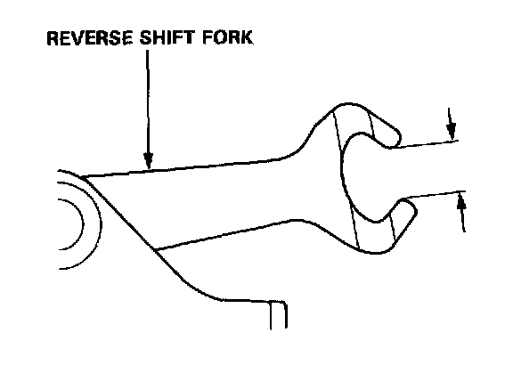

Reverse Idler Gear: Testing and Inspection
Reverse Shift Fork, Reverse Idler Gear Clearance Inspection
1. Measure the clearance between the reverse shift fork and 5th/reverse shift piece pin.
Standard:
Reverse Side: 0.05-0.45 mm (0.002-0.018 in)
5th Side: 0.40-0.90 mm (0.016-0.035 in)

2. If the clearance exceeds the standard, measure the width of the groove in the reverse shift fork.
Standard:
Reverse Side: 7.05-7.25 mm (0.278-0.285 in)
5th Side: 7.40-7.70 mm (0.291-0.303 in)
Note: If the width of the groove exceeds the standard, replace the reverse shift fork with a new one. If the width of the groove is within the standard, replace the 5th/reverse shift piece with a new one.

3. Measure the clearance between the reverse idler gear and reverse shift fork.
Standard: 0.51.1 mm (0.020-0.043 in)
Service Limit: 1.8 mm (0.071 in)

4. If the clearance exceeds the service limit, measure the width of the reverse shift fork.
Standard: 13.0-13.3 mm (0.512-0.524 in)
- If the width exceeds the standard, replace the reverse shift fork with a new one.
- If the width is within the standard, replace the reverse idler gear with a new one.